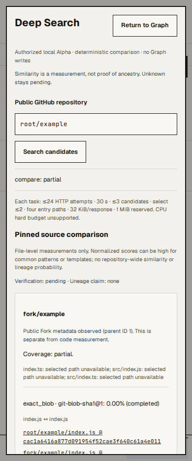
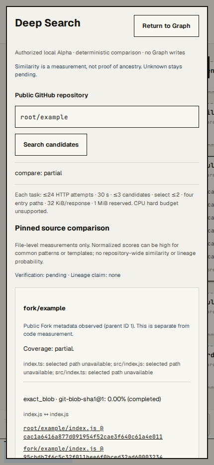
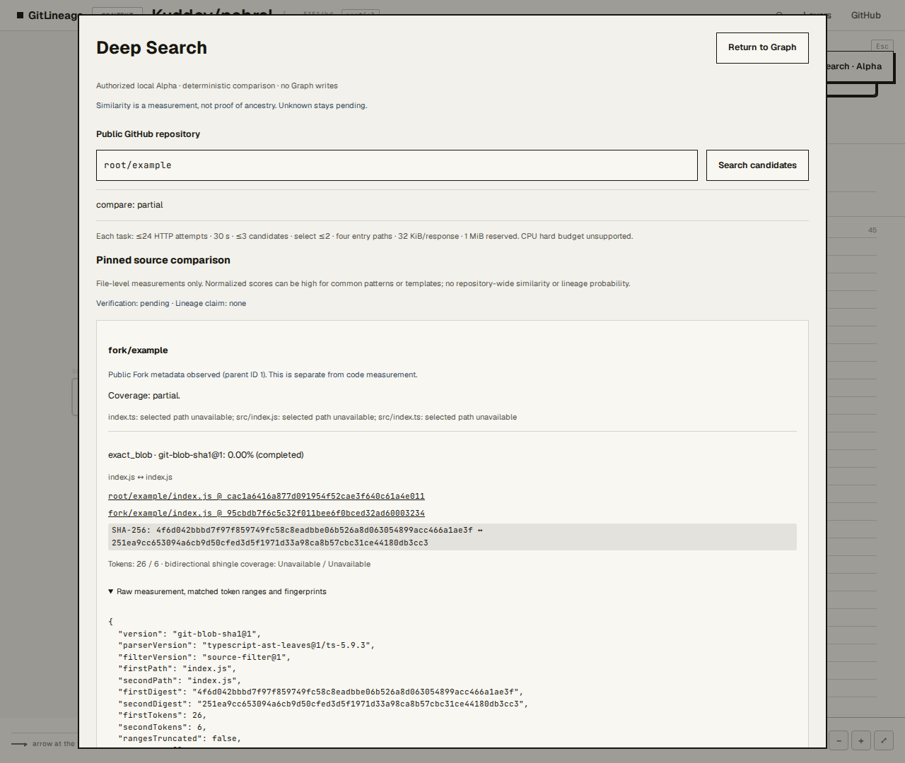
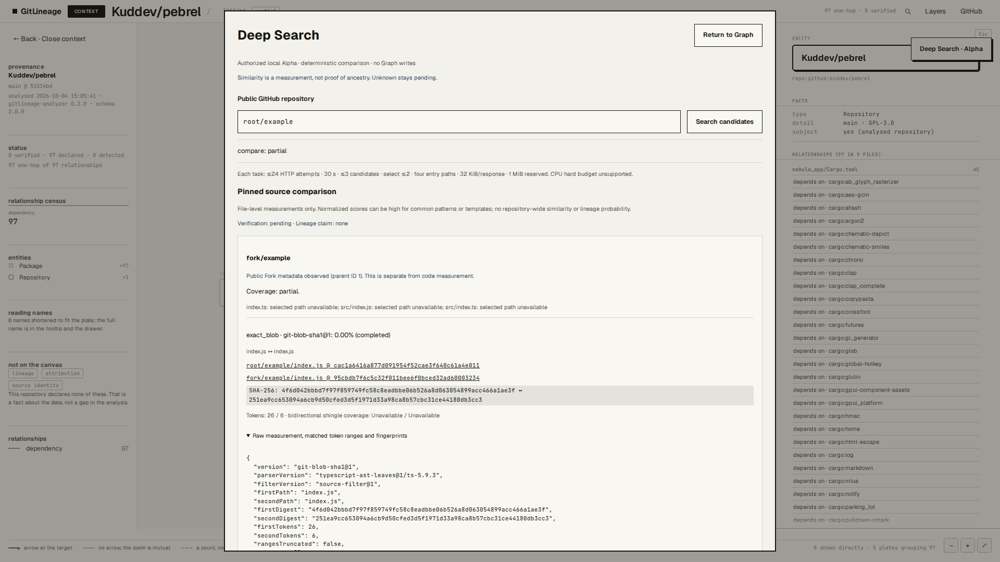
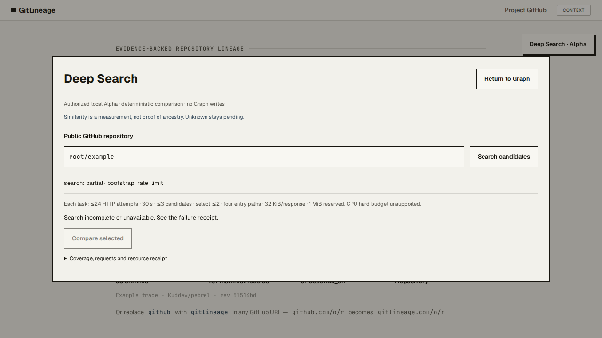
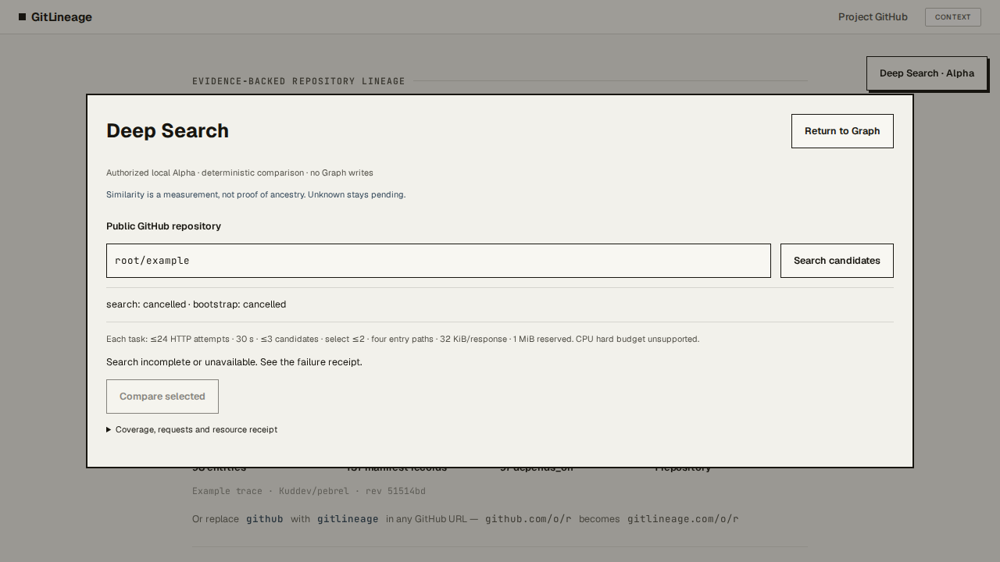
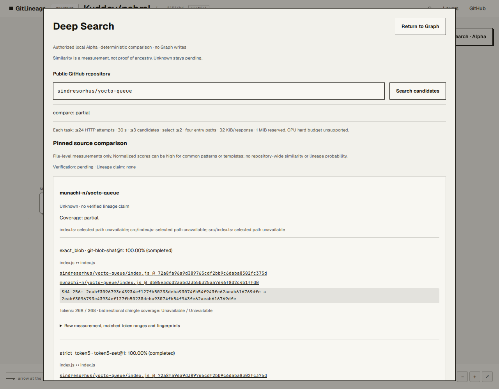

M2 Alpha 浏览器验收
固定 Mock 操作验收与真实 GitHub 测量分别标注。整体覆盖 partial；Unknown 始终 pending，lineage none。没有发布生产。
固定验收收据 · 真实成功收据 · 真实不可比较收据
390 px · fixed Mock, not live GitHub
430 px · fixed Mock
1280 px · fixed Mock
1920 px · fixed Mock
Quota failure, no fabricated zero
Actual cancellation
Real GitHub: identical file, Unknown / pending